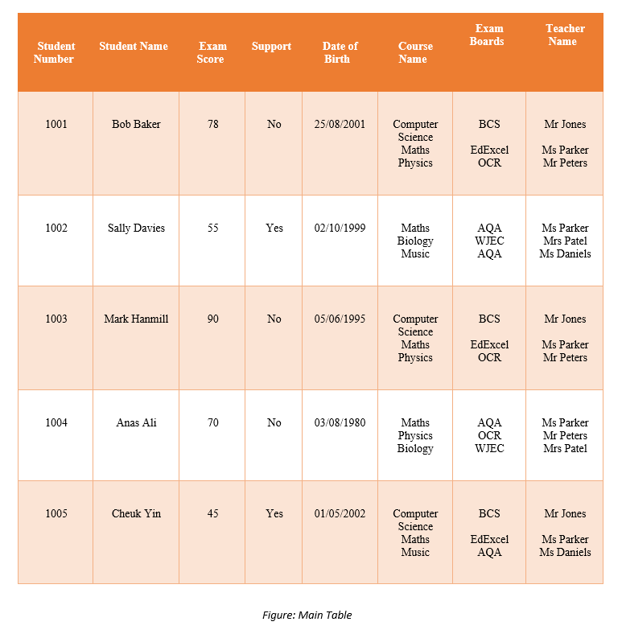
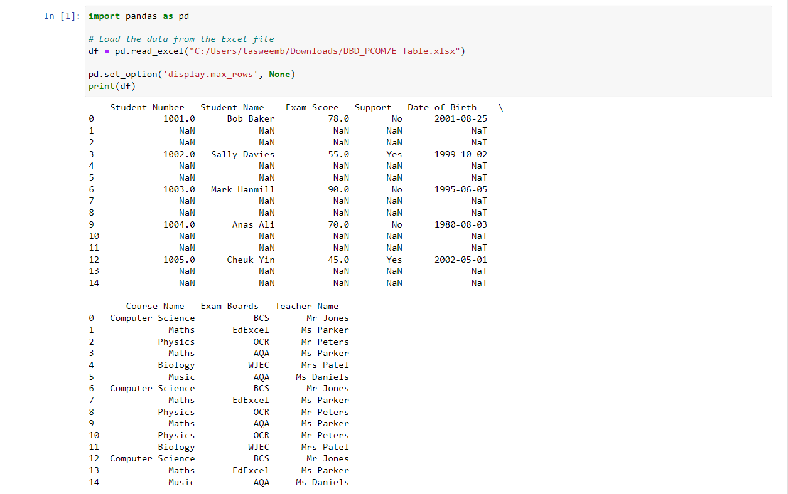
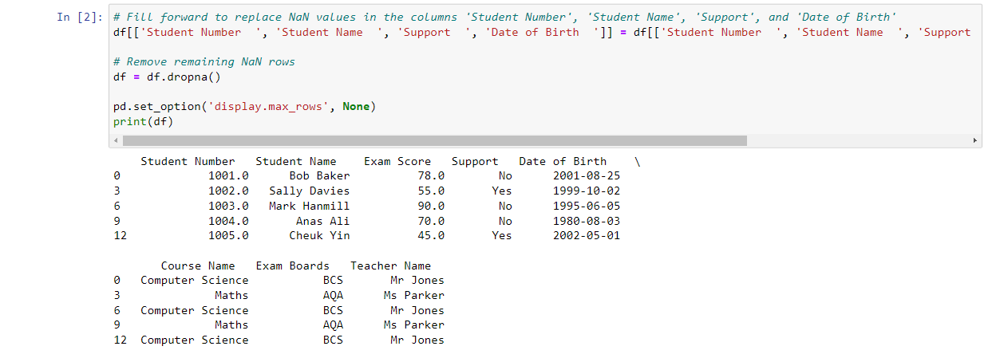
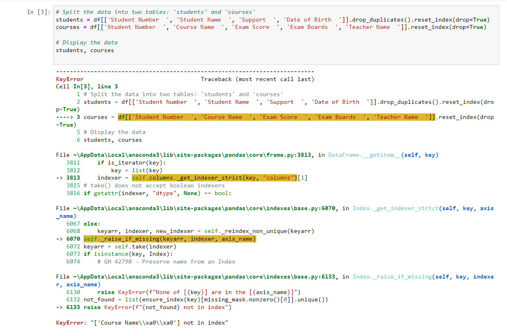
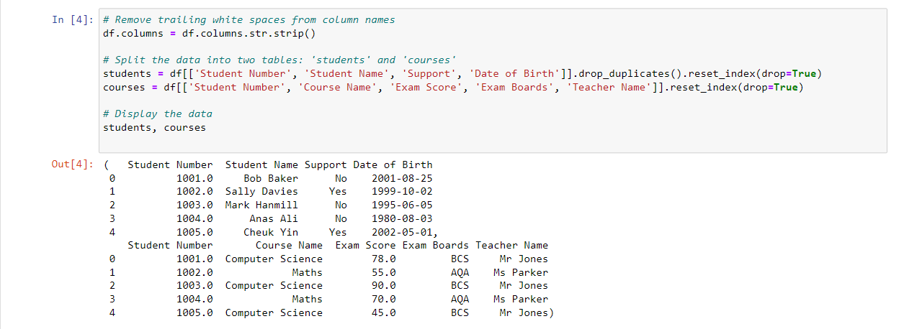
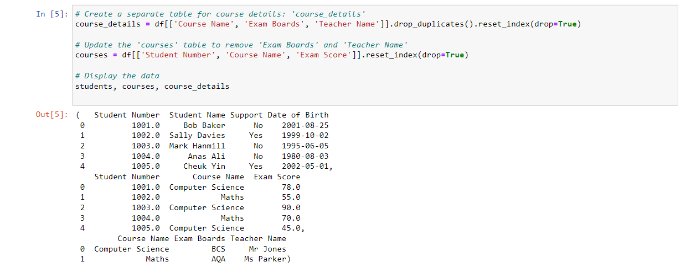
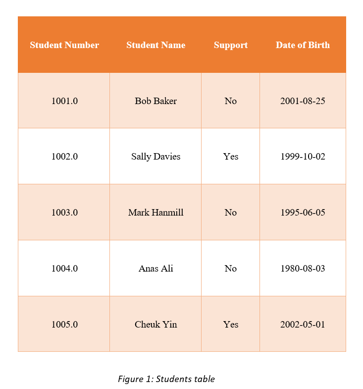

Artefacts
Outcomes from the Team Exercises and activites
✥ Normalization
Data analysis is a process that prepares a data model for implementation. The specific technique is called normalization.
Normalization is a data analysis technique that organizes data attributes so that they are grouped to form non-redundant, stable, flexible, and adaptive entities. (Li et al, 2009).
There are several kinds of normalization, as shown below:
- 1NF (1st Normal Form, eliminate repeating groups): Make a separate table for each set of related attributes, and give each table a primary key.
- 2NF (2nd Normal Form, eliminate redundant data): If an attribute depends on only part of a multi-valued key, remove it to a separate table.
- 3NF (3rd Normal Form, eliminate columns not dependent on key): If attributes do not contribute to a description of the key, remove them to a separate table.
1NF, 2NF, and 3NF are common requirements for data analysis.
Activity:
Below you will see a table with data in un-normalised form. You should normalise this data to 3rd Normal Form (3NF), showing each step of the process i.e., demonstrating 1NF, 2NF and 3NF. Use the table below:
✓First Normal Form (1NF)
In order to reach the First Normal Form (1NF)
- Remove redundant groups from each table.
- For each group of related data, make a distinct table.
- Use a primary key to identify each group of related data.
To achieve this, the NaN values are removed and then associated with every course to each student using a composite primary key (Student Number and Course Name) as shown below.
Each row corresponds to a single record, and there are no recurring groups. 'Student Number' and 'Course Name' make up the primary key. The data are now in First Normal Form (1NF).
✓Second Normal Form (2NF)
To reach the Second Normal Form (2NF)
- Fulfill each First Normal Form criterion.
- Subsets of data that are applicable to multiple rows of a table should be removed and placed in separate tables.
- Use foreign keys to establish relationships between these new tables and the previous ones.
According to the above table, "Exam Score," "Exam Boards," and "Teacher Name" are reliant on "Course Name," whereas "Support," "Date of Birth," and "Support" are based on "Student Number." Consequently, we may divide the table into two sections: one for the information on the student and one for the information on the course.
The KeyError appears to have been triggered by trailing white spaces in the column names. The data is then spit after after eliminating these blank areas.
Subsets of data that are applicable to several rows of a table have been removed and put in separate tables. The primary key for the "students" table is "Student Number," whereas the "courses" table contains a composite primary key made up of "Student Number" and "Course Name." The data is now in Second Normal Form (2NF).
✓Third Normal Form (3NF)
The Third Normal Form (3NF) must be attained by:
- Satisfying all criteria for the second normal form.
- Columns that are not dependent on the primary key should be removed.
"Exam Boards" and "Teacher Name" in our "courses" table depend on "Course Name," but not on "Student Number." As a result, "Exam Boards" and "Teacher Name" can be moved to a different table, where "Course Name" serves as the primary key.
Columns that are not reliant on the primary key have been eliminated. 'Course Name' serves as the primary key in the table 'course_details'. The data is in Third Normal Form (3NF).
The final normalized tables in 3NF are shown below:

Advantages of Normalisation:
- Data redundancy is reduced with the aid of normalization.
- Improved database organization overall.
- Data consistency within the database.
- More adaptable database architecture.
- Enforces the concept of relational integrity.
Disadvantages of Normalisation:
- Before constructing the database, you must first ascertain the demands of the user.
- When the relations are normalized to higher normal forms, such as 4NF and 5NF, the performance suffers.
- The process of restoring higher degree relationships to normalcy takes a long time and is challenging.
- Careless deconstruction can result in a poor database design, which can cause major issues.
✥ Database Build
References:
- DBMS normalization: 1NF, 2NF, 3NF and BCNF with examples - javatpoint (no date) www.javatpoint.com. Available at: https://www.javatpoint.com/dbms-normalization (Accessed: 21 July 2023).
- Li, Q. and Chen, Y.-L. (2009) ‘Entity-relationship diagram’, Modeling and Analysis of Enterprise and Information Systems, pp. 125–139. doi:10.1007/978-3-540-89556-5_6.
- ‘Introducing relational theory’ (no date) Beginning Relational Data Modeling, pp. 27–56. doi:10.1007/978-1-4302-0015-4_2.